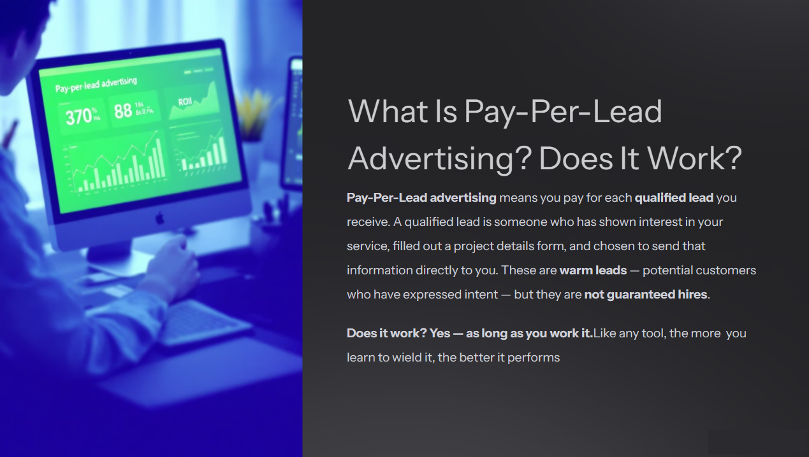
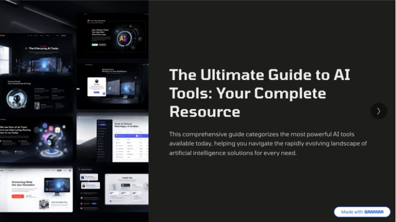
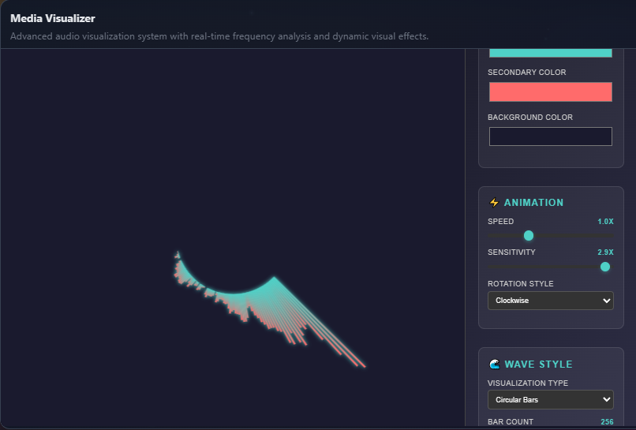
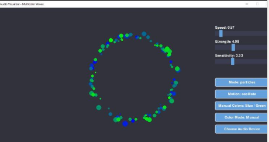

Earlier this month, my team and I were laid off from Thumbtack. Instead of drifting, I made myself a commitment: every weekday, I’d treat 9–5 like a full-time role—and the work was leveling up.
The first thing I did was create a private Slack channel so my team could stay connected. We use it to share certifications, cheer each other on, and keep our momentum.
This is the story of how I turned 30 days into a growth engine.
In This Article You’ll Learn
- How to turn certifications into applied practice
- Ways to stack technical, marketing, and AI skills
- Why shipping projects beats just studying
- How I built my capstone project: Quinn’s Quest 1.0
Step 1: Certifications First
I anchored my learning with credentials:
- HubSpot Certifications in Inbound Marketing, Service Hub, Revenue Operations, and SEO
- Google Cloud Skills Boost in Generative AI
These weren’t just resume lines—they gave me structured frameworks I could practice immediately.
Step 2: Practice SEO With Real Content
I applied my new SEO skills directly by drafting and optimizing more than 40 knowledge base articles.
- Tested keyword research and internal linking
- Learned how structure, clarity, and formatting affect performance
- Built confidence as both a writer and optimizer

Collaboration in action: SEO team sharing strategies and results.
Step 3: Explore AI for Business Docs
I experimented with AI-powered presentations and corporate documents, using generative models to:
- Draft slide decks and reports
- Accelerate document production
- Layer in my own edits for clarity and tone
This phase showed me how AI can speed up workflows without replacing a human voice.
Step 4: Build, Don’t Just List Tools
I compiled a catalog of 100 AI tools with use cases, pros, and cons.
Then I repurposed that research into a LinkedIn carousel—an engaging way to share value publicly and practice storytelling through design.

Gamma 1: Visualizing AI tool research and sharing insights through design.
Step 5: Learn Interfaces & Code
Next, I stepped into technical build projects:
- HTML Visualizer: a basic music visualizer responding to audio
- Python Basics: created a lightweight calculator (calculator.py)
- Visualizer 2.0: rebuilt the music visualizer in Python, combining visuals, interactivity, and logic

Visualizer 1: My first music visualizer project, built in HTML and JavaScript.

A living instrument: the visualizer responds to audio and user input in real time.
Each project stacked on the last—first visuals, then logic, then integration.
Step 6: Write the Logs
I began publishing LinkedIn posts and articles documenting my builds:
- Short posts showing daily progress
- Essays on reskilling, AI adoption, and support workflows
- A running build log of experiments
Writing made the invisible work visible—and turned projects into proof points.
Step 7: Capstone Project — Quinn’s Quest 1.0
Finally, I pulled all the skills together into a full product:
Quinn’s Quest 1.0A side-scrolling game blending system design, art, interface logic, and Python coding.
This wasn’t just a personal project. It was proof that I could integrate marketing, AI, design, and development into one deliverable.
Momentum & Takeaways
In the first month after layoff, I didn’t just study—I stacked.
- Certifications gave me structure
- Projects turned learning into practice
- Writing built credibility and reach
- A capstone tied everything together
By the time I finished Quinn’s Quest 1.0, I wasn’t just collecting skills—I was shipping products.
This approach to AI project management isn’t limited by industry boundaries. The methodology adapts to any business environment, leveraging available information and technology to deliver meaningful results. Its cross-industry relevance demonstrates that success comes from the ability to guide and orchestrate AI solutions—making this skillset valuable wherever innovation is needed.